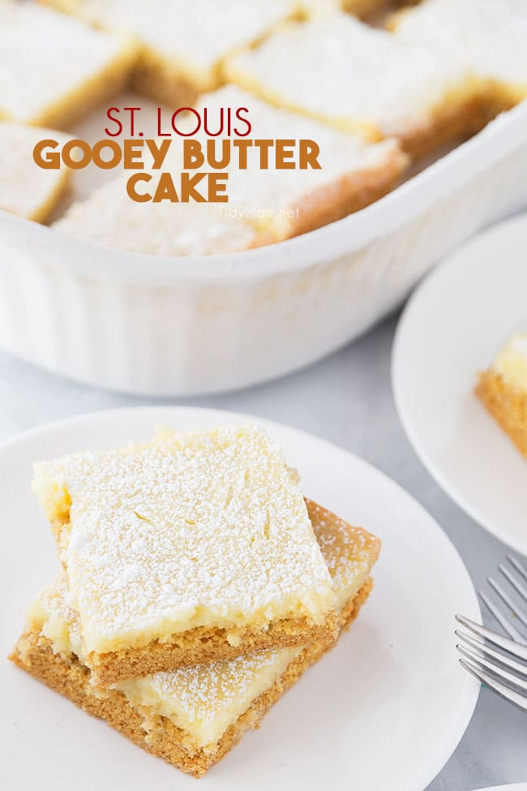

Gooey Butter Cake
Total Time: 55 Minutes

Ingredients
- 1 Box Yellow Cake Mix
- 1 Large Egg
- 1/2 cub (1stick) butter, melted
For Filling:
- 8oz cream cheese, softened
- 2 large eggs, bteaten
- 2 cups powered suggar (+extra for dusting)
Instructions
- Preaheat oven to 325° F and grease a 9x13x2 cake pan.
- In a large bowl, combine the cake mix, 1 egg and melted butter until well combined (it should be a thick dough).
- Using clean hands press the dough into the prepared pan with your fingers.
- Using an electric mixer, blend, cream cheese, 2 beaten eggs, and powdered sugar until smooth.
- Spread filling over first dough layer.
- Bake for 40-45 minutes, or until edges are brown.
- Cool cake on cooling rack. Dust with powdered sugar after cake has cooled completely.